I'd already designed an app that keeps the useful side of finding events on social media, without its downsides. But it had never been properly branded. It needed an identity that could hold its own next to Resident Advisor, Instagram and Spotify without becoming one more loud feed.
A brand built on one idea, relevant and real, carried through a name, a speaker-cone logo, one vivid colour, two typefaces and a 20-page set of guidelines.
The audience is Berlin's inner-city music lovers, aged 25 to 40. They're a varied group, so rather than split them into segments I designed for what they share: niche live music, and not much patience for anything that isn't real.
A brand pyramid and a mood board helped me pin down how the brand should feel. That became its essence: in a world where everything claims to be relevant, the things that are actually real, like a night in front of a sound system, are what matter.
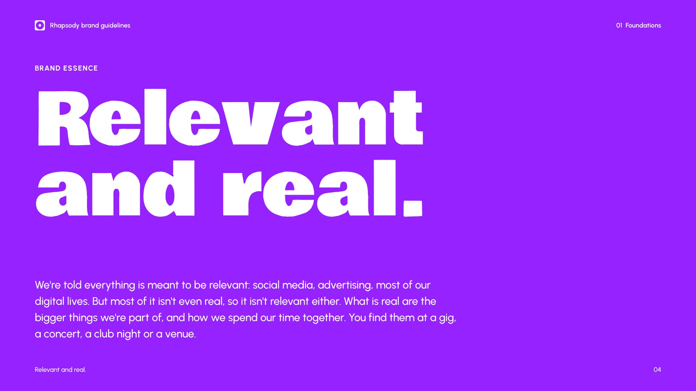
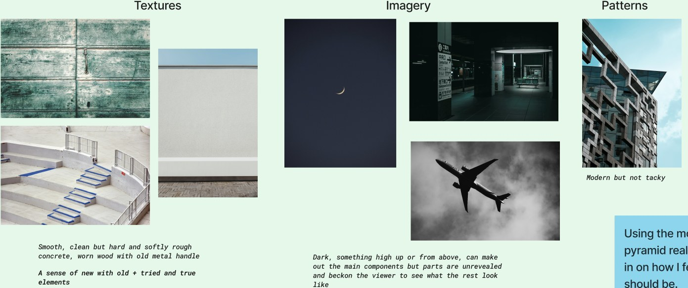
I compared six competitors, from Resident Advisor and echtzeitmusik to Ticketmaster, Eventfrog, Spotify and Instagram, by logo, type, colour and screens, then plotted them on positioning maps.
Resident Advisor, Instagram and Spotify strip their apps back to black and white and let a colourful logo do the work.
Rhapsody does the same, but in light mode by default, so it stands apart from the dark apps around it.
The closest competitor uses an abstract mark and the rest use type, so Rhapsody gets a simple, clear symbol.
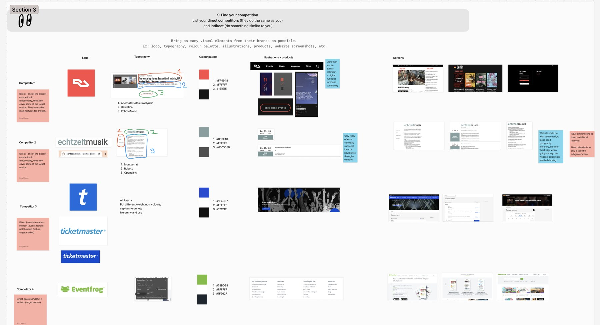
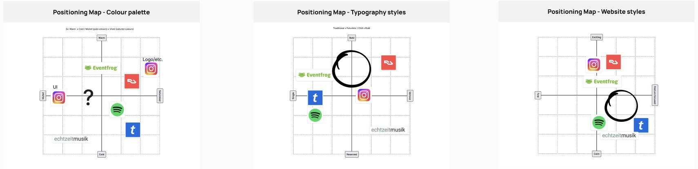
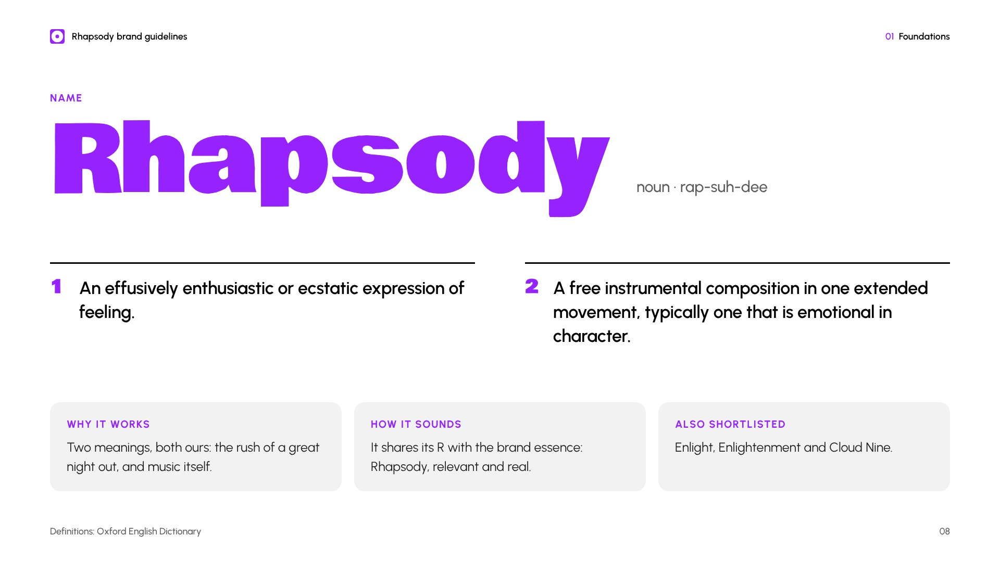
From a shortlist including Enlight and Cloud Nine, Rhapsody won on its double meaning: an ecstatic expression of feeling, and a free-flowing piece of music. It also shares its R with the essence: Rhapsody, relevant and real.
I sketched objects and ideas linked to the brand, from speakers and sound waves to lights and dancing people, and narrowed them to four concepts. I dropped the typographic R, because positioning called for a symbol, and the speaker with sound waves, which had too many lines to stay simple. The plain speaker cone was the clearest, and softer corners made it a little more playful.
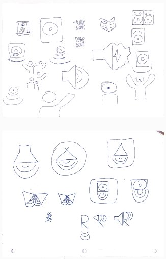
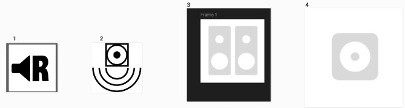
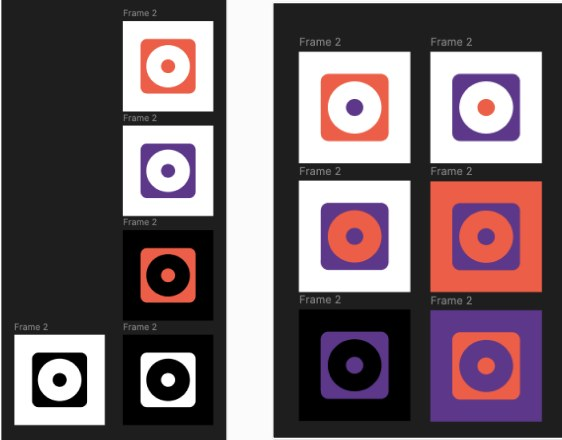
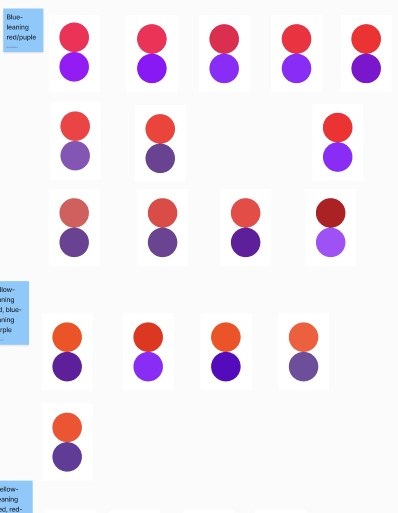
I started with a warm red-orange and purple pair to reflect the two halves of relevant and real. Then I noticed the red was very close to Resident Advisor's, my most direct competitor, so I dropped it for a single Vivid Violet.
Vivid Violet passes WCAG AA on white at 5.3:1. It's too dark for small text on black, so for dark mode the guidelines add a lighter violet that passes at 7.3:1.
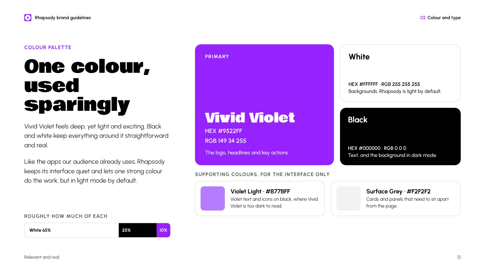
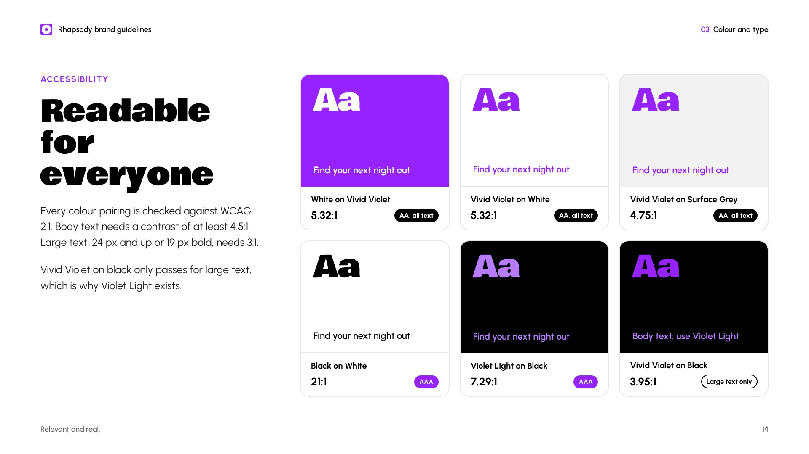
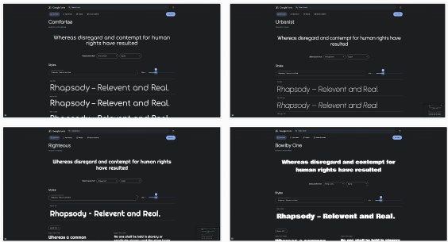
Comfortaa was too close to a comic look and Righteous felt too futuristic. Urbanist is clean like Helvetica but with more character, so it handles body text. Bowlby One makes a big statement, so it's saved for headlines.
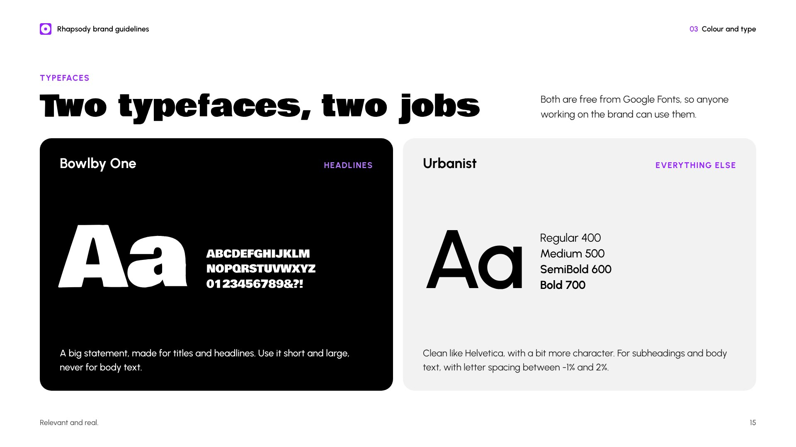
In the app, white space and black text let event photos and flyers bring the colour. Violet only marks what matters: headings, the current tab and the main action.
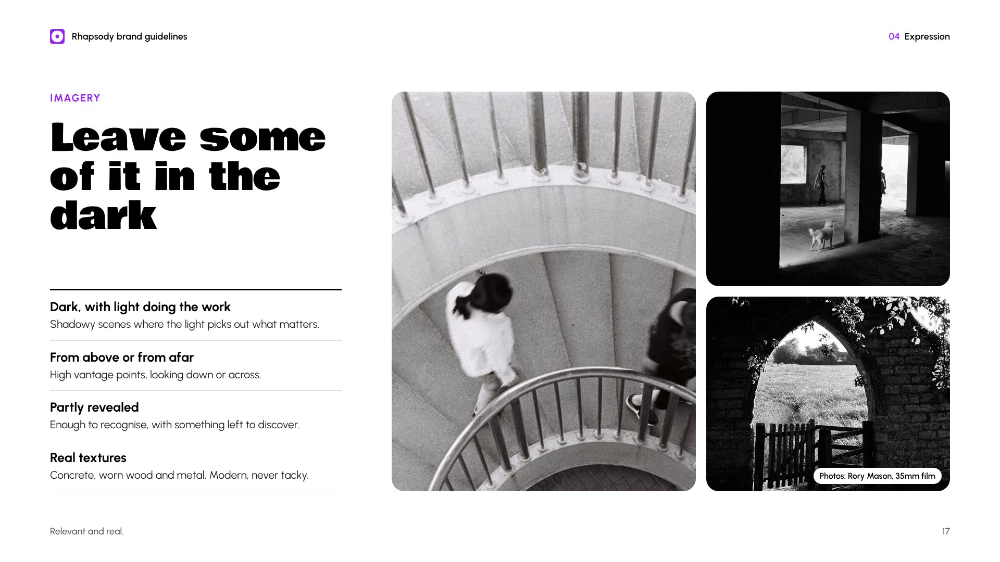
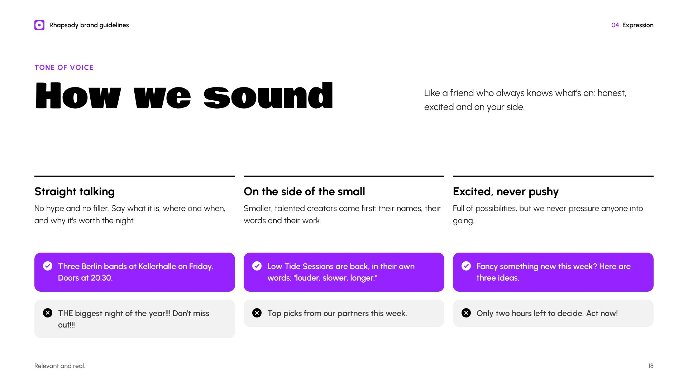
Twenty pages covering foundations, logo, colour and type, and how the brand comes to life. Select a page to see it full size.
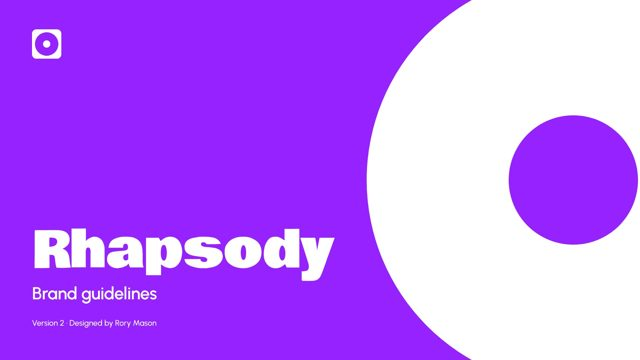
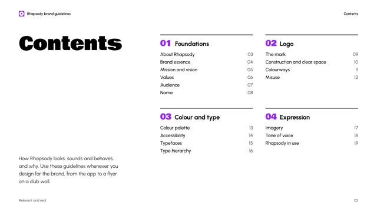
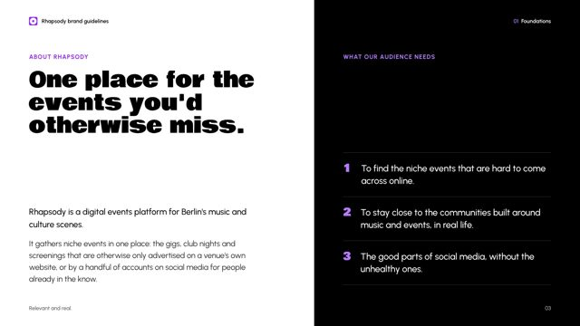
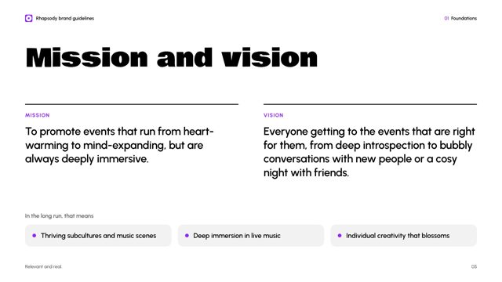
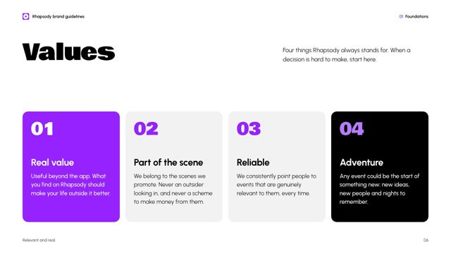
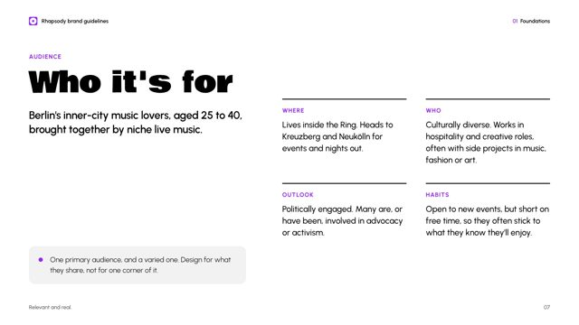
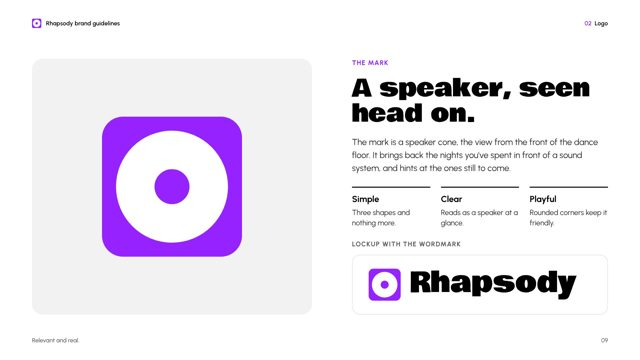
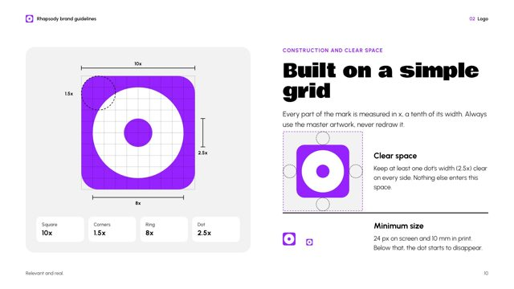
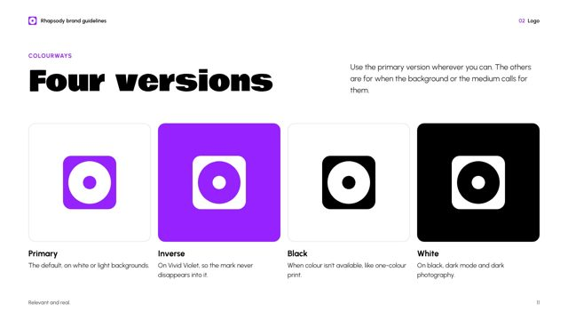
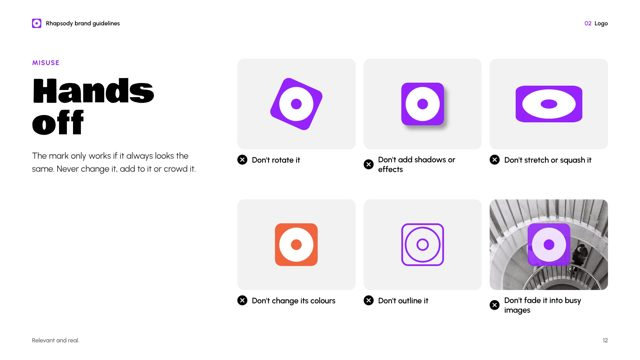
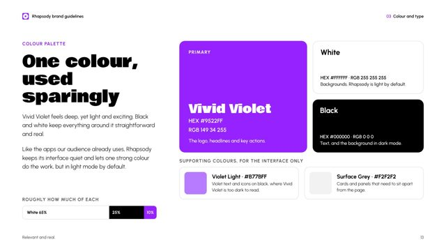
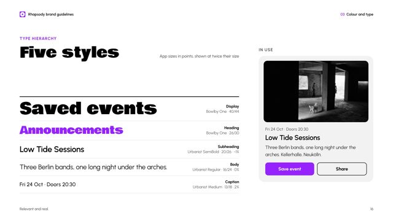
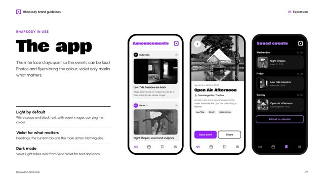
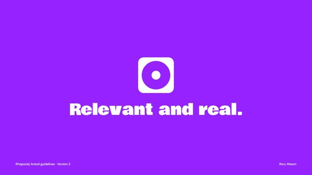
Test it with the audience. A five-second test, showing people app screens and asking what they think the brand is about, would show whether relevant and real comes across.
Check competitors before choosing colours. I only spotted the clash with Resident Advisor's red late on. Checking earlier would have saved a round.
Validate the essence. The pyramid and mood board helped me find the feeling, but until people from the audience confirm it, it's still my instinct.